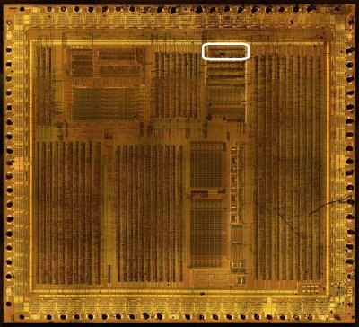
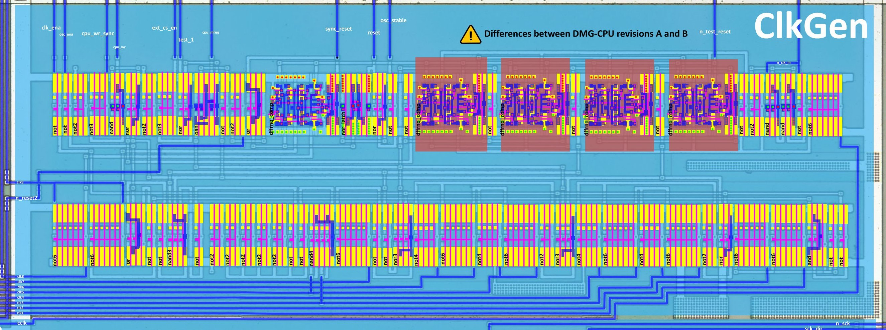
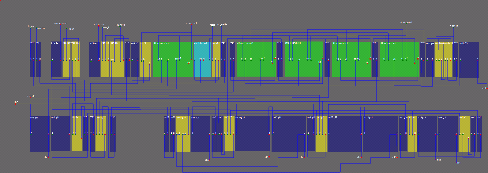
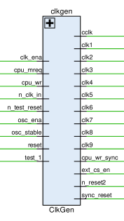
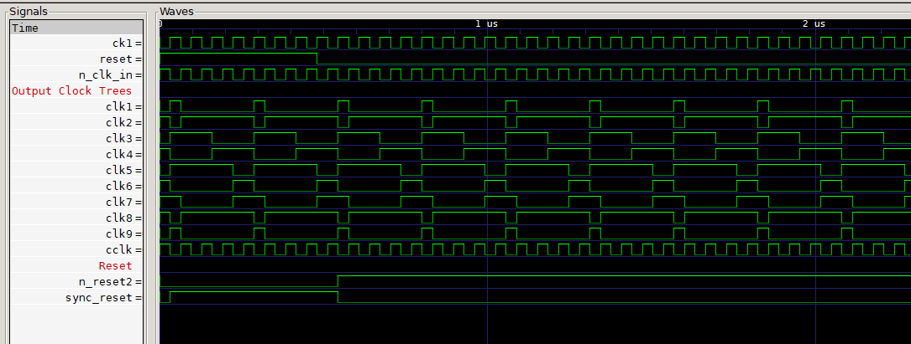

Clock Generator & System Control
In general, we can consider that everything is good here. There may be some minor refinements, but in general "the engine has started"
ClkGen generates the clock signals for the whole chip, synchronizes the resets, and controls the external chip select and write synchronization.



Module Overview
- Clock generation: produces the clock signals (
clk1..clk9,cclk) for the CPU and the peripherals. - Reset: synchronizes
resetinton_reset2andsync_reset. - External chip select: generates
ext_cs_enfor external memory/peripheral access. - Write synchronization: produces
cpu_wr_syncfromcpu_wr. - Oscillator: controls the oscillator enable/stability signals (
osc_ena,osc_stable).
Signals

The names of signals of the CLK group have many synonyms used by different authors at different times.
| Signal | Dir | From/Where To | Description |
|---|---|---|---|
| clk_ena | Input | From Core | Clock enable signal |
| osc_ena | Input | From Core | Oscillator enable signal |
| cpu_wr_sync | Output | To MMIO,Arb | Synchronized SM83 Core write signal |
| cpu_wr | Input | From Core | SM83 Core write signal |
| ext_cs_en | Output | To Arb | External chip select enable signal |
| test_1 | Input | From MMIO | Test1 mode enable (disable all internal CPU A/D bus drivers). (Aka T1nT2) |
| cpu_mreq | Input | From Core | SM83 Core memory request signal |
| sync_reset | Output | To Core | Synchronized reset signal |
| reset | Input | From /RES Pad | System reset signal |
| osc_stable | Input | From MMIO | Oscillator stability signal |
| n_test_reset | Input | From MMIO | Active-low test reset signal |
| n_clk_in | Input | From CK1_CK2 Pad | Active-low external clock input |
| n_reset2 | Output | To Ser,MMIO,Arb,PPU,APU | Active-low Global reset signal |
| clk1 | Output | To Core | Generated clock signals for various CPU and peripheral components. (Aka BOWA,ADR_CLK_N) |
| clk2 | Output | To Core,MMIO,Arb,APU | (Aka DATA_VALID,ADR_CLK_P) |
| clk3 | Output | To Core | (Aka CPU_PHI,DATA_CLK_P) |
| clk4 | Output | To Core,MMIO,APU,PHI Pad | (Aka #CPU_PHI,DATA_CLK_N) |
| clk5 | Output | To Core | (Aka INC_CLK_N) |
| clk6 | Output | To Core,MMIO,PPU,APU | (Aka INC_CLK_P) |
| clk7 | Output | To Core,HRAM,APU | (Aka BUKE,LATCH_CLK) |
| clk8 | Output | To Core | (Aka BOMA_1MHZ,MAIN_CLK_N) |
| clk9 | Output | To Core,MMIO,APU | (Aka BOGA_1MHZ,MAIN_CLK_P) |
| cclk | Output | To APU,PPU | Input clk complement (same as n_clk_in) (Aka AZOF) |
Signal flow:
n_clk_inis inverted and divided into the CLK outputs (clk1..clk9,cclk); the clocks are gated byosc_ena/osc_stable.resetis synchronized bydmg_dffrnq_compflip-flops inton_reset2andsync_reset.ext_cs_enis derived fromcpu_mreqand enables external memory/peripheral access when the CPU requests it.cpu_wr_synciscpu_wrsynchronized with the clock.- The oscillator must be stable before the clocks are enabled.
Phase pattern of all CLK outputs:

If you see a picture like that, then you're good.
Measured phase table (issue #396, HDL/soc/icarus/soc/tb_clkgen)
Measured in simulation with the real ClkGen netlist (WSL-native Icarus;
see clkgen_phases.py in the testbench folder). The M-cycle is 4
oscillator cycles and all clocks toggle once per M-cycle except
n_clk_in/cclk, which follow the oscillator.
| Signal | posedge offset inside the M-cycle |
|---|---|
n_clk_in / cclk |
every oscillator half-cycle (phases 32/96/160/224 ns at 4.19 MHz-ish osc) |
clk1, clk3, clk5, clk9 |
0 (T-cycle 0 edge) |
clk2, clk8 |
+1 oscillator cycle |
clk4 |
+2 oscillator cycles |
clk6, clk7 |
+3 oscillator cycles |
Verified behaviour (tb_clkgen, all PASS):
-
clk_ena=0stops the CPU clock groupclk1..clk7(clk6 tested) whileclk8/clk9keep running (they feed the divider chain / MMIO oscillators) - "clock enable" is a CPU-clocks gate, not a global stop. -
osc_ena=0stops the whole clock tree (tested on clk9). cpu_wr_syncpulses exactly once per M-cycle whilecpu_wris high.-
ext_cs_enis active low: whilecpu_mreqis held high it pulses low ~64 ns once per M-cycle (the external chip-select enable window). -
reset release: after
/RESgoes away,n_reset2/sync_resetdeassert through the synchronizer chain below.
The older hypothesis below is kept for history; treat the measured table as authoritative.
Assignment of Clocks (hypothesis, older):
- clk1+clk2: Prechagre Clock, during clk2=0 all buses are precharged where required. Matches about the same phase as clk8+clk9, but most likely the developers made a separate clock to control the timings precisely (moving the phase slightly with delays as required).
- clk3+clk4: M-cycle Clock (T ÷ 4)
- clk5+clk6: Last T-cycle (3) of the current M-cycle (@ posedge clk6)
- clk7: Used for Overlap technique when the circuit "completes" something on the 0th T-cycle of the next M-cycle (e.g. used for fetch-execute overlap in SM83 Core) (@ negedge clk7)
- clk8+clk9: First T-cycle (0) of the current M-cycle (@ posedge clk9)
To get the "middle" T-cycles (1 and 2) you can use a bit of logic, for instance "If clk4=1 and clk6=0, then the 2nd T-cycle is now being executed".
Netlist structure (issue #396 analysis)
The ClkGen netlist is small (~56 cells) and splits into functional blocks:
-
Oscillator / T-cycle skeleton (
g43/g44NAND latch onn_clk_in, dffsg53..g56clocked byw5/w6= the osc half-cycles): produces the 4-phase skeleton (w7/w9/w60/w62family), one M-cycle = 4 oscillator cycles.w5/w6also givecclk(g15) and the phase clocks. -
Phase shaping & CPU-clock gating: the not2/not6/not10 inverter chains (
g13..g28) derive the individualclk1..clk7edges from the skeleton;clk_enaenters throughg1/g16(w43) into theclk2..7combos. Measured: clk_ena=0 freezes clk1..clk7. -
clk8/clk9 + cclk branch:
clk9 = ~w12,clk8 = ~clk9,w12 = w40 & osc_ena- onlyosc_enagates this branch (measured: clk9 keeps running with clk_ena=0; stops with osc_ena=0). -
Reset synchronizer: nor-latch
g51(set when~reset & osc_stable) -
dff
g52(->sync_reseton posedge clk9) +g6/g46->n_reset2. Whileosc_stable=0the latch cannot set, so the internal resets stay asserted (observed: MMIO drives osc_stable after its own start-up; the testbench forces it high).n_test_reset(from MMIO) is the async reset ofg52..g56- i.e. a hard reset of the whole divider/reset chain. -
cpu_wr_sync (
g49/g50/g3):cpu_wrqualified by the phase windoww21 = w7 & ~w60-> one pulse per M-cycle while WR is high. -
ext_cs_en (
g47/g48/g4):~w53withw53 = ~(test_1 | w56)andw56 = ~((w9 & w60) | cpu_mreq)- a per-M-cycle low pulse whilecpu_mreqis high (measured above).
Map
| Row | Cells |
|---|---|
| 1 | not, not, not2(unused), not3, nand, nor, not2(unused), not3, nor, oan, not, not2, or, dffrnq_comp, nor_latch, nor, not, not, dffrnq_comp, not, dffrnq_comp, not, dffrnq_comp, not, dffrnq_comp, not, not2, nand, nand, not, not6 |
| 2 | not6, not6, or, not, not, nand3, not, not2(unused), not2(unused), not2(unused), not2(unused), not2(unused), not, not, nand4, not6, not, not, nor3, (not4+not6){not10}, (not4+not6){not10}, not2, nor3, (not4+not6){not10}, (not4+not6){not10}, not2, nor, not6, not6, and, not, not |